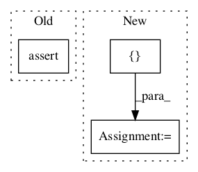

5a4a3ac3c8a87b612ab205ec98ed1be0efa80720,official/nlp/modeling/ops/sampling_module_test.py,SamplingModuleTest,test_topk,#SamplingModuleTest#Any#,67

Before Change
padded_decode=padded_decode)
ids, _ = top_k_obj.generate(
initial_ids=tf.constant([9, 1]), initial_cache=self.cache)
self.assertAllEqual([2, 5], ids.shape)
if __name__ == "__main__":
tf.test.main()
After Change
tf.random.set_seed(1)
ids, _ = top_k_obj.generate(
initial_ids=tf.constant([9, 1]), initial_cache=self.cache)
top_k_expected = tf.constant([[9, 1, 0, 2, 2], [1, 0, 1, 1, 0]])
self.assertAllEqual(top_k_expected, ids)
@parameterized.named_parameters([
("padded_decode_true", True),
In pattern: SUPERPATTERN
Frequency: 4
Non-data size: 3
Instances
Project Name: tensorflow/models
Commit Name: 5a4a3ac3c8a87b612ab205ec98ed1be0efa80720
Time:
Author: null
File Name: official/nlp/modeling/ops/sampling_module_test.py
Class Name: SamplingModuleTest
Method Name: test_topk
Project Name: GPflow/GPflow
Commit Name: f36052b395dc48a473dcc5b49d8d9a3b5d6f58ba
Time:
Author: null
File Name: gpflow/conditionals/util.py
Class Name:
Method Name: sample_mvn
Project Name: tensorflow/models
Commit Name: 4909765543ff0c96627161ecc75eec6c309dbdce
Time:
Author: null
File Name: official/resnet/keras/keras_common_test.py
Class Name: KerasCommonTests
Method Name: test_build_stats
Project Name: tensorflow/agents
Commit Name: a3b5ba44826094feb3f9f02265c416045f59aa08
Time:
Author: null
File Name: tf_agents/bandits/policies/policy_utilities_test.py
Class Name: PolicyUtilitiesTest
Method Name: testBadMask